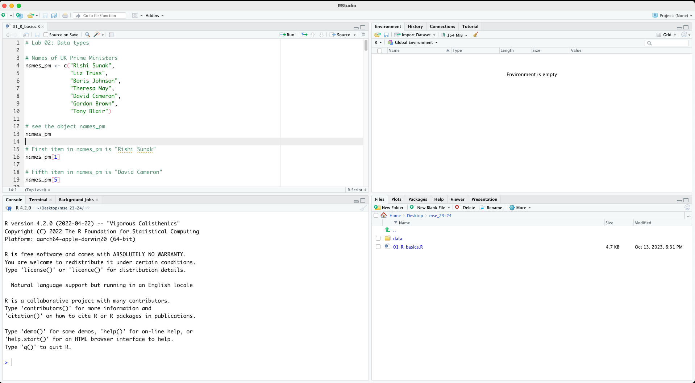
3 Basic Data Analysis
If you have followed the instructions in Chapter 2.10, you should have a folder for this module in which one R file named 01_R_basics.R and one folder named data are present.
You can open R Studio by launching 01_R_basics.R. You should see a screen similar to Figure 3.1. R Studio will automatically set working directory to your module folder. This approach allows us to have a tidy filing system. Our data files are in the data folder.
Let’s create a new R Script for this week. It is either File > New File > R Script or cmd/ctrl + shift + N keyboard shortcut. You can save your script by cmd/ctrl + s. Give it an intuitive name such as 02_analysis_basics.R.
3.1 Load a .csv file
For practice purposes, let’s load the simple dataframe we created last week. We will use read.csv() function. Recall that the file is under the folder data.
read.csv("data/my_first_file.csv")
#> names_pm birth_years age_current party
#> 1 Rishi Sunak 1980 43 Conservative
#> 2 Liz Truss 1975 48 Conservative
#> 3 Boris Johnson 1964 59 Conservative
#> 4 Theresa May 1956 67 Conservative
#> 5 David Cameron 1966 57 Conservative
#> 6 Gordon Brown 1951 72 Labour
#> 7 Tony Blair 1953 70 LabourLet’s download data World in 2010. This dataset is available on Blackboard. It can also be downloaded from here. A codebook is also available on Blackboard. Make sure to take a look at it.
Let’s be tidy and move this file into the data folder under our module folder. You can navigate in your module directory within R Studio. For example, in Figure 3.2 files tab show the folder data.
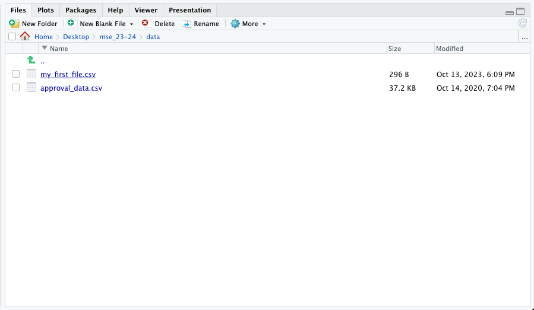
You can actually list files in your computer with R commands too!
# list files under working directory
list.files()# list files under data folder
list.files("data/")
#> [1] "my_first_file.csv" "world_in_2010.csv"Now we are ready to load world_in_2010.csv into R. We should also have a sense of the dataset.
# load data:
df <- read.csv("data/world_in_2010.csv")
# have a look
View(df)
# type of the object
class(df)
#> [1] "data.frame"
# how many variables?
ncol(df)
#> [1] 42
# how many rows?
nrow(df)
#> [1] 166
# names of the variables
names(df)
#> [1] "COWcode" "Country_Code"
#> [3] "Country_Name" "WB_Region"
#> [5] "WB_IncomeGroup" "Population_total"
#> [7] "Urban_pop" "GDP_pc_PPP"
#> [9] "Infant_Mortality_Rate" "Life_exp_female"
#> [11] "Life_exp_male" "HIV"
#> [13] "Literacy_rate_female" "Literacy_rate_all"
#> [15] "Current_acc_bal_USD" "Current_acc_bal_perc_of_GDP"
#> [17] "ODA_USD" "ODA_perc_of_GNI"
#> [19] "Natural_resources_rents_perc_of_GDP" "FDI_net_inflows_perc_of_GDP"
#> [21] "Net_migration_2008_2012" "GINI_index_WB_estimate"
#> [23] "Inc_share_by_highest_10per" "Unemployment_rate"
#> [25] "Surface_area_sq_km" "v2x_polyarchy"
#> [27] "democracy" "v2x_libdem"
#> [29] "v2x_egaldem" "Geographical_Region"
#> [31] "UN_vote_PctAgreeUS" "UN_vote_PctAgreeRUSSIA"
#> [33] "UN_vote_PctAgreeBrazil" "UN_vote_PctAgreeChina"
#> [35] "UN_vote_PctAgreeIndia" "UN_vote_PctAgreeIsrael"
#> [37] "milex" "milper"
#> [39] "cinc" "CivilConflict"
#> [41] "Corruptions_Perspectives_Index" "Turnout"Each row represents a state in the international system. So we can say that the unit of observation is the state. Variables show several attributes of each state (note that I will use state and country interchangeable).
We call this a cross-sectional data because we have units but no time dimension. The whole dataset is for the year 2010. Usually, such country-level data would also contain multiple years so that comparison can be over-time, but to keep things simple for now, we are only working with a single year. When we add the time dimension to cross-sectional data, we will call it time-series cross-sectional.
How many countries do we have in this dataset? We already know the answer because we checked the number of rows. Recall that each row represents a state in the international system so that the total number of rows will give me the number of countries in the data.
# how many rows?
nrow(df)
#> [1] 1663.2 Summary of a Categorical Variable
Let’s describe a categorical variable. We can work with Geographical_Region, which records where a country is located geographically. To see how many countries are in each region, we can use table() and provide a descriptive summary of this variable.
table(df$Geographical_Region)
#>
#> Africa Americas Asia
#> 47 27 30
#> Europe Mid. East & North Africa Ocenia
#> 39 17 6Now, we have a frequency table of Geographical_Region. I can see that 47 countriese are in Africa, 27 in Americas and so on. For categorical variables, a frequency table is appropriate for a descriptive summary.
We can also create a bar plot and visually summarize the data. Each bar will represent the number of countries in each geographical region. In short, we will visually display the information in table(df$Geographical_Region) using a barplot.
barplot(height = table(df$Geographical_Region))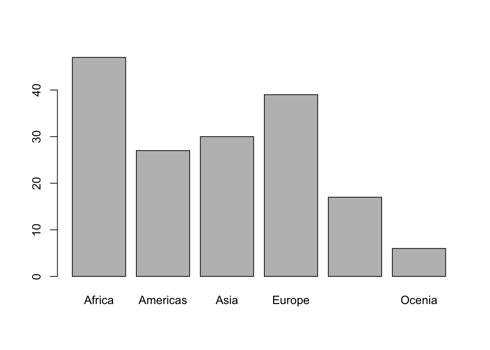
This is a good start, but we will do better. Before going any further, let’s unpack the code. The function barplot() takes a vector of numbers, which it uses to display heights. For instance, if we want to display four bars with heights 5, 10, 12 and 7, we can plug such a vector into barplot().
barplot(height = c(5,10,12,7))Note that bars above don’t have labels at the moment, because we did not provide any information. For Geographical_Region, however, table() creates a named vector.
# A named vector:
table(df$Geographical_Region)
#>
#> Africa Americas Asia
#> 47 27 30
#> Europe Mid. East & North Africa Ocenia
#> 39 17 6
# Names:
names(table(df$Geographical_Region))
#> [1] "Africa" "Americas"
#> [3] "Asia" "Europe"
#> [5] "Mid. East & North Africa" "Ocenia"Going back to our hypothetical barplot, we can provide it a names argument. Let’s say the numbers 5, 10, 12 and 7 correspond to Orange, Banana, Apple, Pear.
barplot(height = c(5,10,12,7), names.arg = c("Orange", "Banana", "Apple", "Pear"))
So the barplot() above took the height and names.arg arguments.
For easier read and navigation, it is a good idea to use a systematic way to write the code. You can press ↵ after the end of the first argument.
# easier to read code
barplot(height = c(5,10,12,7),
names.arg = c("Orange", "Banana", "Apple", "Pear")
)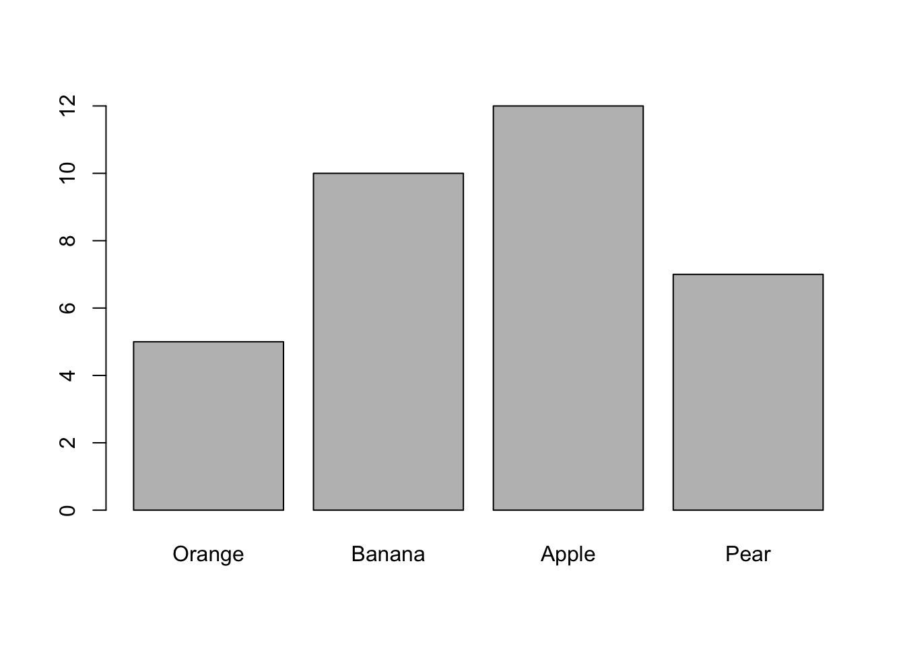
Now we have a very good idea how barplot() works. Going back to the bar plot for Geographical_Region, the category “Mid. East & North Africa” is too long. I want to change it with just “MENA”.
You can take assign table input to an object and work on it.
# Get the table() into an object
barplot_input <- table(df$Geographical_Region)
# Check the object
barplot_input
#>
#> Africa Americas Asia
#> 47 27 30
#> Europe Mid. East & North Africa Ocenia
#> 39 17 6
# check the names of each value
names(barplot_input)
#> [1] "Africa" "Americas"
#> [3] "Asia" "Europe"
#> [5] "Mid. East & North Africa" "Ocenia"Fifth item in names(barplot_input) is “Mid. East & North Africa”. I could go and change it by using the squared bracket [] notation.
# Fifth Item in Barplot
names(barplot_input)[5]
#> [1] "Mid. East & North Africa"
# To change it you can assign a new name
names(barplot_input)[5] <- "MENA"
# Check the object again
barplot_input
#> Africa Americas Asia Europe MENA Ocenia
#> 47 27 30 39 17 6Now we can do the barplot.
barplot(barplot_input)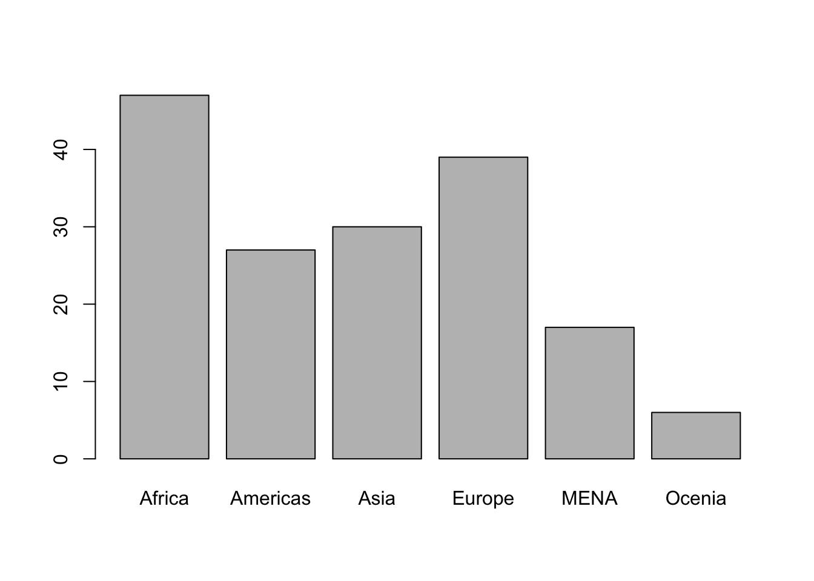
We changed the name successfully.
3.3 Caution! Hard-coding can create problems
It is important highlight that we are doing this exercise for learning purposes. We are trying to understand how we can deal with data, manipulate variables, change names, etc.
We used the following code as a shortcut for learning purposes:
names(barplot_input)[5] <- "MENA"This code tells R to the following:
- take the
names()ofbarplot_input - go to the fifth item
- change it with “MENA”
This is problematic because we are specifying fifth item in a way that if the data (or the order of categories) change for any reason (e.g., a new update), you
This is called hard-coding and should be avoided as much as possible.
Instead we want to tell the following:
- take the
names()ofbarplot_input - go to “Mid. East & North Africa”
- change it with “MENA”
Let’s start again and re-create barplot_input.
# barplot_input: table of df$Geographical_Region
barplot_input <- table(df$Geographical_Region)
# names are back to original
barplot_input
#>
#> Africa Americas Asia
#> 47 27 30
#> Europe Mid. East & North Africa Ocenia
#> 39 17 6
# Hard-coding (should be avoided): get me the fifth item
names(barplot_input)[5]
#> [1] "Mid. East & North Africa"
# Instead of a hard-coded item number such as 5
# We are going to write a statement inside:
# get me "Mid. East & North Africa"
names(barplot_input)[names(barplot_input) == "Mid. East & North Africa"]
#> [1] "Mid. East & North Africa"So, we put the statement names(barplot_input) == "Mid. East & North Africa" instead of hard-coding the item number, five. Recall that == stands for is equal to. This statement itself gives me a logical vector.
names(barplot_input) == "Mid. East & North Africa"
#> [1] FALSE FALSE FALSE FALSE TRUE FALSEYou should see that the fifth item is TRUE and the others are FALSE. Instead of writing 5 by keyboard, we futureproof ourselves by putting in a statement.
- Go to vector
names(barplot_input) - Find the value where
names(barplot_input)is equal to “Mid. East & North Africa”
- Change it to “MENA”
names(barplot_input)[names(barplot_input) == "Mid. East & North Africa"] <- "MENA"We have the barplot below.
barplot(barplot_input)We can make this graph prettier by adding titles and ordering by region.
# sort by frequency
barplot_input <- sort(barplot_input, decreasing = T)
# barplot:
barplot(barplot_input,
main = "Number of Countries by Region",
ylab = "Number of Countries"
)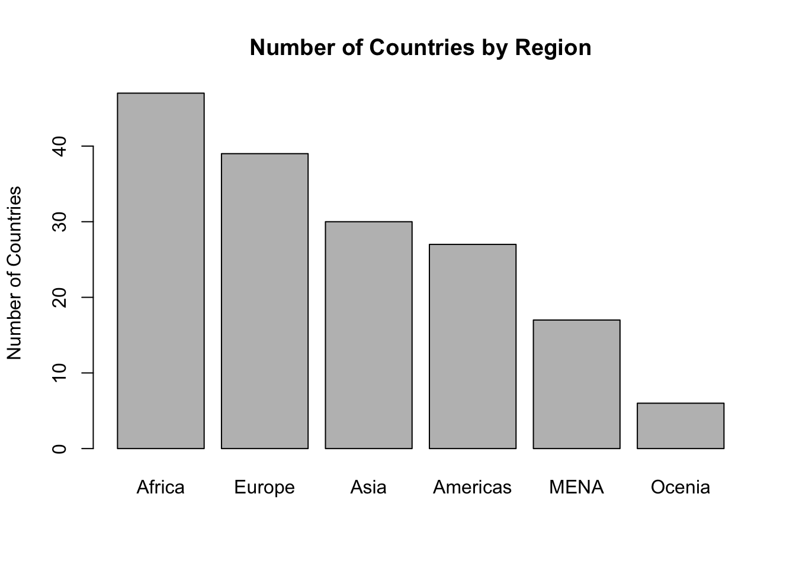
Check the help file for barplot() to see all the arguments you can plug in.
?barplot()3.4 Summary of a Numerical Variable
Next, let’s work with a numerical variable. Life_exp_female is a measurement of female life expectancy across the world in 2010. The function summary() will give the min, max, mean, median, and first and third quartiles.
# Summary of the variable
summary(df$Life_exp_female)
#> Min. 1st Qu. Median Mean 3rd Qu. Max.
#> 48.88 64.41 74.91 71.94 78.73 86.30We can also check such statistics one by one.
# mean of a variable
mean(df$Life_exp_female)
#> [1] 71.94012
# minimum
min(df$Life_exp_female)
#> [1] 48.88
# maximum
max(df$Life_exp_female)
#> [1] 86.3Recall that quartiles divides the data into four parts. Median is the mid-point, which is also called the second quartile.
| Symbol | Name(s) | Definition | Use |
|---|---|---|---|
| Min | Minimum | Minimum of data | Checking the minimum boundary |
| Q1 | First Quartile 25th Percentile |
splits off the lowest 25% of data from the highest 75% |
Typical low value |
| Q2 | Median Second Quartile 50th Percentile |
middle of data cuts data set in half |
Mid-point Typical value |
| Q3 | Third Quartile 75th Percentile |
splits off the highest 25% of data from the lowest 75% |
Typical high value |
| Max | Maximum | Maximum of data | Checking the maximum boundary |
Besides summary() we can also use median() and quantile() functions to get the quartiles.
# median:
median(df$Life_exp_female)
#> [1] 74.905
# also median:
quantile(df$Life_exp_female, probs = 0.50) # 0.50 indicates half-way (50%)
#> 50%
#> 74.905
# first quartile
quantile(df$Life_exp_female, probs = 0.25) # 0.25 indicates 25%
#> 25%
#> 64.41
# third quartile
quantile(df$Life_exp_female, probs = 0.75) # 0.75 indicates 75%
#> 75%
#> 78.73
# five point summary
quantile(df$Life_exp_female, probs = c(0, 0.25, 0.50, 0.75, 1))
#> 0% 25% 50% 75% 100%
#> 48.880 64.410 74.905 78.730 86.300Using summary() to get a five-point numerical summary is perfectly fine. We briefly visited quantile() for demonstration purposes. There are many ways to achieve the same thing in R.
For dispersion, variance and standard deviation can be calculated.
# standard deviation
sd(df$Life_exp_female)
#> [1] 9.353926
# variance
var(df$Life_exp_female)
#> [1] 87.49594
# recall that square root of variance is standard deviation
sqrt( var(df$Life_exp_female) )
#> [1] 9.353926
# ask R if you don't believe me
sd(df$Life_exp_female) == sqrt( var(df$Life_exp_female) )
#> [1] TRUE3.5 Visual Summary
When working on a new dataset, it is always a good idea to start by visually summarizing your variables one by one. This will help you to get a sense of the data.
For a numerical variable, two types of graphs are appropriate for a visual summary:
- Histogram
- Box plot
3.5.1 Histogram
# histogram:
hist(df$Life_exp_female)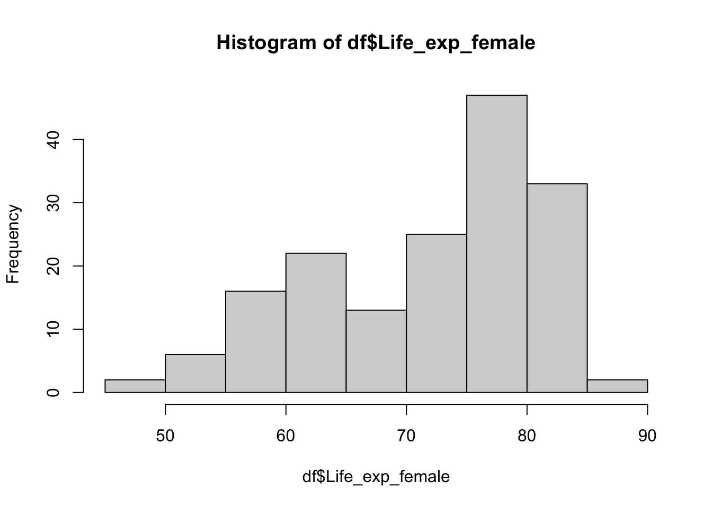
You can tell R how many bins you would like to have in your histogram by using the breaks argument, but as the R help file clarifies, this number is a suggestion only, and R can use a different (but similar value) to draw a pretty histogram.
# histogram with fewer bins
hist(df$Life_exp_female, breaks = 5)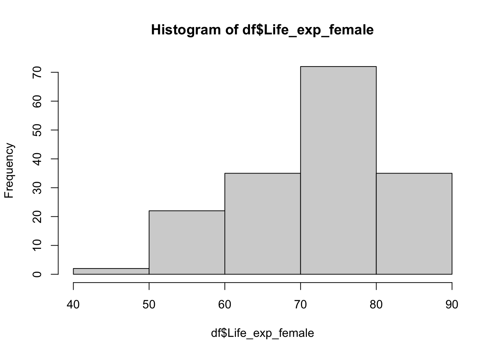
# histogram with higher number of bins
hist(df$Life_exp_female, breaks = 30)
You might want to specify cut points. For example, you might want to have a sequence from 40 to 100 with increment of 5.
# a sequence from 40 to 100 by 5
seq(from = 40, to = 100, by = 5)
#> [1] 40 45 50 55 60 65 70 75 80 85 90 95 100
# put it into an object
my_breaks <- seq(from = 40, to = 100, by = 5)
# this will be our break points
#tell R to do the histogram using these points
hist(df$Life_exp_female, breaks = my_breaks)
This looks quite nice and intuitive. However, titles are not defined. I don’t want to see df$Life_exp_female as an axis or main graph title.
#Histogram with titles and breaks
hist(df$Life_exp_female,
breaks = my_breaks,
main = "Female Life Expectancy in 2010",
ylab = "Number of Countries",
xlab = "Age"
)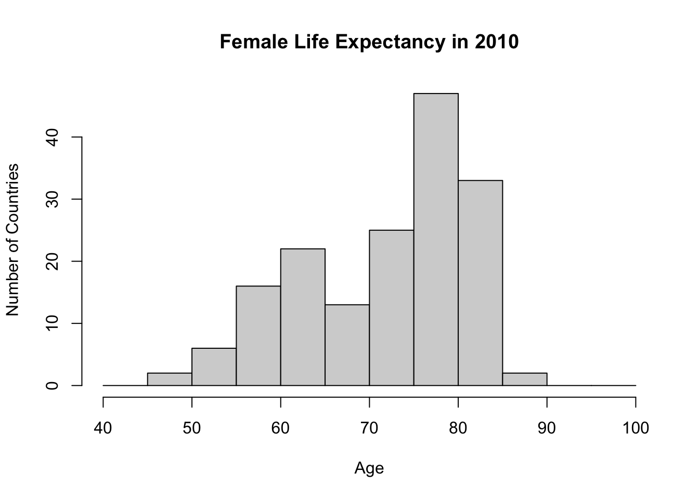
3.5.2 Boxplot
Another graphical summary for a numerical variable is box plot. They are really nice to get a sense of the data, understand the distribution, and quickly see if there are any outliers. They are also very good at creating visual comparisons across groups, something which we will cover in upcoming weeks.
# Boxplot
boxplot(df$Life_exp_female,
main = "Female Life Expectancy in 2010",
ylab = "Age")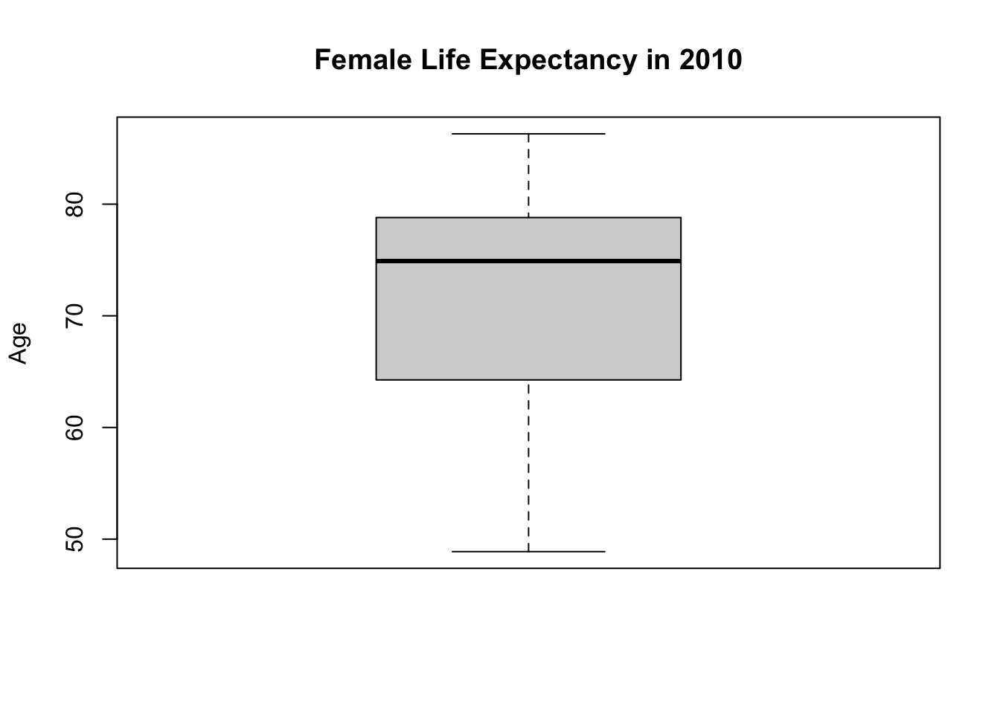
This box plot helps us to visualize the five-point summary. You can see minimum, max, median and first and third quartiles.
If you don’t believe me, we can plot these over the boxplot.
# box plot:
boxplot(df$Life_exp_female,
main = "Female Life Expectancy in 2010",
ylab = "Age")
# you can add a line to a plot by abline
# h stands for horizontal
# tell R to draw a horizontal line at the median of Life_exp_female
abline(h = median(df$Life_exp_female))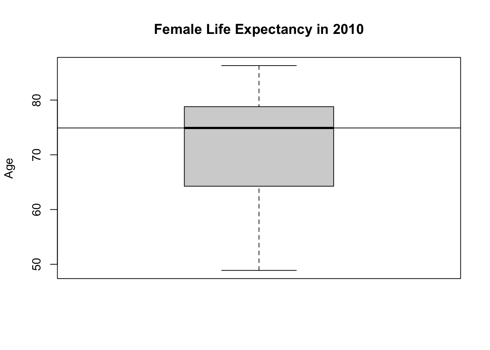
You can draw lines for each statistic.
# box plot:
boxplot(df$Life_exp_female,
main = "Female Life Expectancy in 2010",
ylab = "Age")
# median
abline(h = median(df$Life_exp_female))
# min
abline(h = min(df$Life_exp_female))
# max
abline(h = max(df$Life_exp_female))
# first quartile
abline(h = quantile(df$Life_exp_female, probs = 0.25))
# third quartile
abline(h = quantile(df$Life_exp_female, probs = 0.75))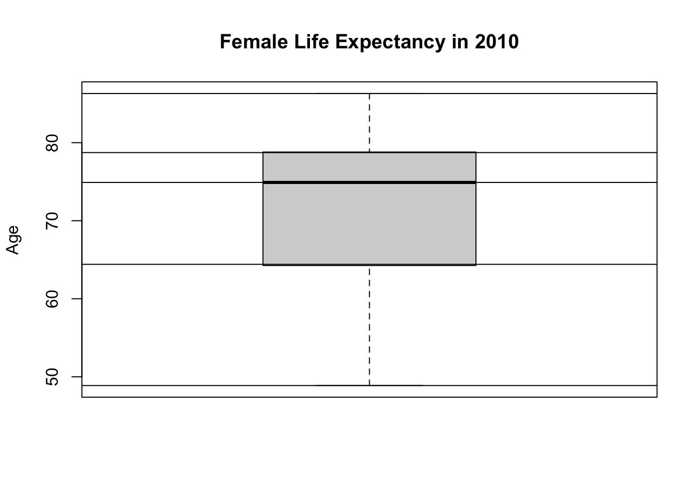
We drew these lines for demonstration purposes and show that a box plot visualizes the information in a five-point summary.
3.6 Dealing with missingness
Sometimes our variable of interest may have missing values inside. For example, GDP per capita PPP (PPP stands for purchasing power parity) variable is GDP_pc_PPP. GDP data for some countries are missing.
summary(df$GDP_pc_PPP)
#> Min. 1st Qu. Median Mean 3rd Qu. Max. NA's
#> 646.9 3127.0 9627.9 15494.4 20497.9 122609.4 5NA’s here means missing. GDP data for five countries are not available. Let’s find these five countries. The function is.na() tells whether something is missing or not.
# is GDP_pc_PPP missing
is.na(df$GDP_pc_PPP)
#> [1] FALSE FALSE FALSE FALSE FALSE FALSE FALSE FALSE FALSE FALSE FALSE FALSE
#> [13] FALSE FALSE FALSE FALSE FALSE FALSE FALSE FALSE FALSE FALSE FALSE FALSE
#> [25] FALSE FALSE FALSE FALSE FALSE FALSE FALSE FALSE FALSE TRUE FALSE FALSE
#> [37] FALSE TRUE FALSE FALSE FALSE FALSE FALSE FALSE FALSE FALSE FALSE FALSE
#> [49] FALSE FALSE FALSE FALSE FALSE FALSE FALSE FALSE FALSE FALSE FALSE FALSE
#> [61] FALSE FALSE FALSE FALSE FALSE FALSE FALSE FALSE FALSE FALSE FALSE FALSE
#> [73] FALSE FALSE FALSE FALSE FALSE FALSE FALSE FALSE FALSE FALSE FALSE FALSE
#> [85] FALSE FALSE FALSE FALSE FALSE FALSE FALSE FALSE FALSE FALSE FALSE FALSE
#> [97] FALSE FALSE FALSE FALSE FALSE FALSE FALSE FALSE FALSE FALSE FALSE FALSE
#> [109] FALSE FALSE FALSE FALSE FALSE FALSE FALSE FALSE FALSE FALSE FALSE FALSE
#> [121] TRUE FALSE FALSE FALSE FALSE FALSE FALSE FALSE FALSE FALSE FALSE FALSE
#> [133] FALSE FALSE TRUE FALSE FALSE FALSE FALSE FALSE FALSE FALSE FALSE TRUE
#> [145] FALSE FALSE FALSE FALSE FALSE FALSE FALSE FALSE FALSE FALSE FALSE FALSE
#> [157] FALSE FALSE FALSE FALSE FALSE FALSE FALSE FALSE FALSE FALSE
# what is the name of the country with missing GDP_pc_PPP
df$Country_Name[is.na(df$GDP_pc_PPP) == TRUE]
#> [1] "Cuba" "Djibouti" "Korea, Dem" "Somalia" "Syrian Ara"
# you can think the statement above as this:
# Bring 'Country Name' such that 'GDP' is missingDealing with missingness appropriately is important because it might create problems. For example, regular functions mean() and max() will get confused if we do not deal with missingness explicitly.
# mean of GDP_pc_PPP
mean(df$GDP_pc_PPP)
#> [1] NA
# R tells me it is missing
# because you cannot make a calculation with a missing value
# Tell R that to remove missing values
mean(df$GDP_pc_PPP, na.rm = TRUE) # na.rm stands for 'na remove'
#> [1] 15494.4This is also the case for other functions such as min() and max().
# same for max and min
max(df$GDP_pc_PPP) # without na.rm
#> [1] NA
max(df$GDP_pc_PPP, na.rm = FALSE) # na.rm FALSE
#> [1] NA
max(df$GDP_pc_PPP, na.rm = TRUE) # na.rm TRUE
#> [1] 122609.4
# instead of TRUE or FALSE you ca write T and F
min(df$GDP_pc_PPP)
#> [1] NA
min(df$GDP_pc_PPP, na.rm = T)
#> [1] 646.86
min(df$GDP_pc_PPP, na.rm = F)
#> [1] NAGraphical functions will handle missingness automatically.
# histogram
hist(df$GDP_pc_PPP)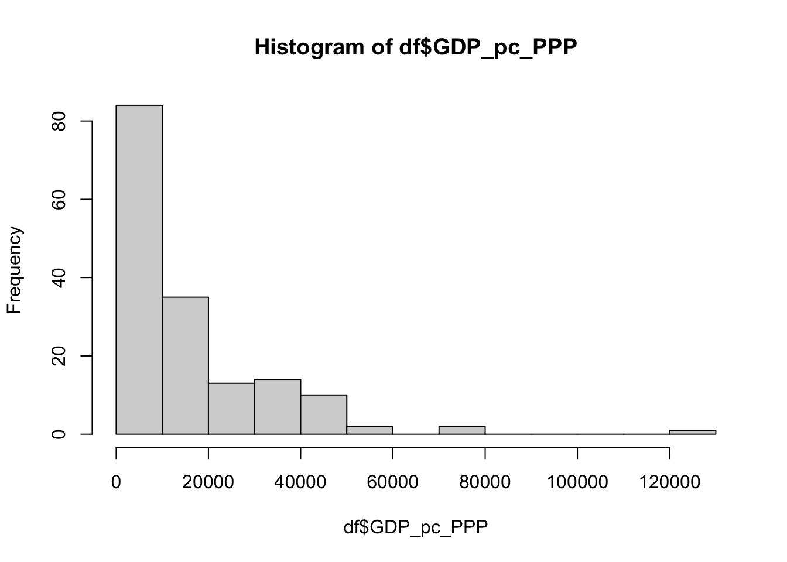
# boxplot
boxplot(df$GDP_pc_PPP)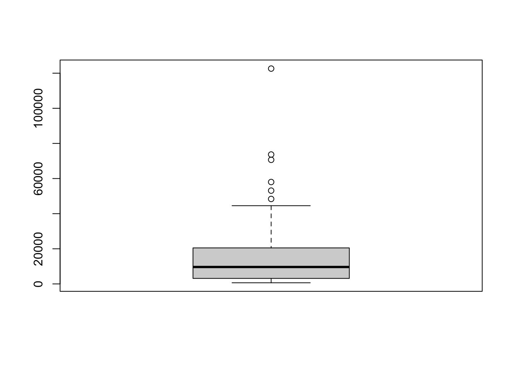
This final box plot above (for GDP per capita) shows six points above the vertical line denoting the maximum. What are those?
They are outliers. These countries have a very high values for GDP per capita. These values are quite different than the rest as they are much higher. Such values are called outliers.
Let’s find which countries have these highest values. To do so, I am going to sort my data frame. order() will give me the row number based on ordering of a variable.
# row numbers by highest GDP_pc_PPP
order(df$GDP_pc_PPP, decreasing = T)
# get these row numbers to a row
# so that we don't need to write this long statement again and again
row_nos <- order(df$GDP_pc_PPP, decreasing = T)# First item in row_nos is the row number of the highest GDP_pc_PPP
row_nos[1]
#> [1] 124
# get the name of the country
df$Country_Name[ row_nos[1] ]
#> [1] "Qatar"
# recall that for the first six rows, you could write this
row_nos[c(1,2,3,4,5,6)]
#> [1] 124 82 131 111 24 158
# writing c(...) is cumbersome
c(1,2,3,4,5,6)
#> [1] 1 2 3 4 5 6
# a better approach is
seq(1,6)
#> [1] 1 2 3 4 5 6
# R has a shortcut for this:
1:6 #(from 1 to 6)
#> [1] 1 2 3 4 5 6
# row numbers of the highest 6 observations (GDP_pc_PPP)
row_nos[1:6]
#> [1] 124 82 131 111 24 158
# plug this into df$Country_Name
df$Country_Name[ row_nos[1:6] ]
#> [1] "Qatar" "Kuwait" "Singapore" "Norway" "Switzerlan"
#> [6] "United Sta"